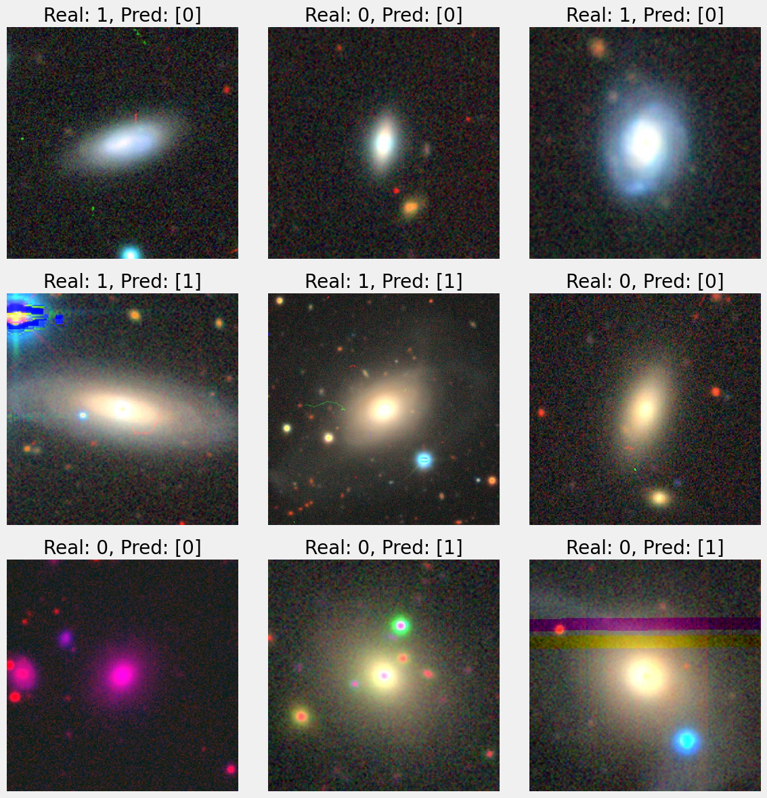
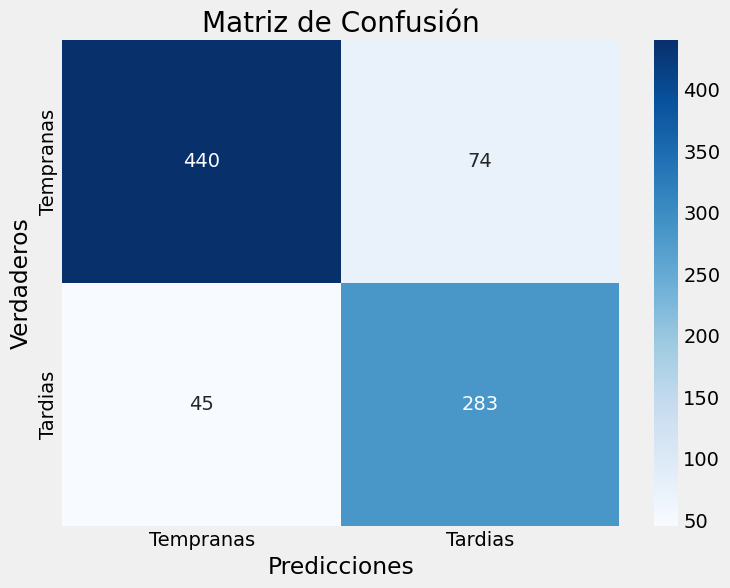
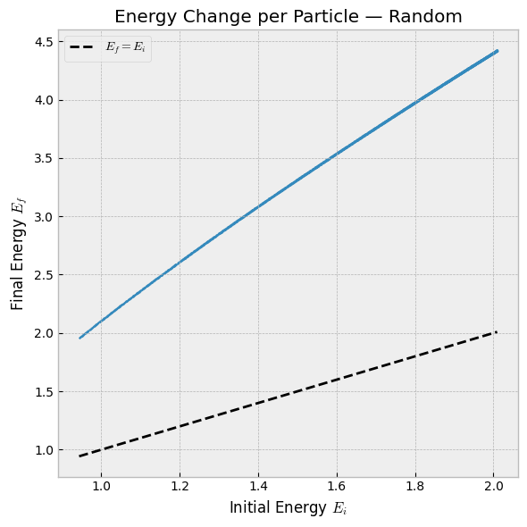
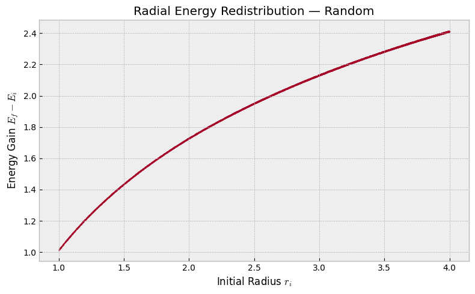

About the Professional Log
Welcome to my Professional Log. This section of my website serves as a dedicated academic and technical portfolio. Here, you will find my curriculum vitae, details regarding my ongoing Master's Thesis Project, documentation of my Python programming projects, and a collection of written works.
Note: This space is strictly reserved for my professional and academic endeavors. If you are looking for more personal or relaxed content—such as my weekly blog where I discuss recent scientific papers, technology news, and other topics not directly related to my thesis—please head back to the main portal and select the Personal Hub.
About Me
Hello, and welcome to my professional log. My name is Luis A. Quiroz, and I am a data science-driven physicist and current Master's student in Astrophysics at UNAM's Astronomy and Physics Institutes. I specialize in theoretical cosmology, numerical simulations, data visualization, and the application of computational methods to complex mathematical physics problems.
Currently, I am developing my Master’s Thesis Project (MTP), tentatively titled Effective Equation of State and Gravitational Particle Production in Inflationary Models, under the direction of Dr. Marcos A. García García. In this research, I write modular Python code to run numerical simulations that analyze the dynamics of inflaton and spectator fields during the reheating transition. For non-physics people, that means studying the early Universe energy fields that would become fundamental particles and could explain modern astrophysical questions like dark matter (DM) or the still-happening expansion of the space itself.
Beyond theoretical cosmology, my academic and professional trajectory heavily integrates data science (DS), machine learning (ML), and artificial intelligence (AI). My background includes specialized coursework in neural networks (NN) and AI modeling - I took Dr. Jose Antonio Vazquez Mata's course on NN as a bachelor at UNAM's Faculty of Science, I am currently revisiting Dr. Mehryar Mohri's course on Foundations of ML at New York University (NYU) and taking the Introduction to Modern AI lectures given by Dr. Zico Kolter at Carnegie Mellon University (CMU) - allowing me to apply advanced computational architectures to rigorous data sets.
I have actively applied these analytical and programming skills in industry environments. Recently, I have worked as an AI Trainer, contributing to human-in-the-loop learning pipelines and providing high-quality annotations for natural language processing (NLP) tasks. This includes direct experience with Reinforcement Learning Through Human Feedback (RLHF), refining large language model (LLM) behavior in real-time evaluations.
Effective scientific communication and interdisciplinary research are also central to my methodology. Over the years, I have cultivated a strong foundation in academic and analytical writing, authoring award-winning essays (Concursos Interpreparatorianos 2017-2019) spanning both physics and the humanities, such as Natural and Artificial Satellites and Why Study Philosophy Today?. I love a good research project!
Finally, as a polyglot with proficiency in English, German, Italian, and Portuguese, I am equipped to collaborate effectively across international and multidisciplinary teams. Whether I am modeling financial workflows, training language models, or simulating the early universe, my goal is always to leverage computational tools to extract meaningful insights from complex systems.
If for some reason you do not already have a copy of my Résumé (or CV) here you can find one.
Hope you have a wonderful day/night/whatever! And as John Lennon said at the end of The Beatles rooftop concert, I hope we passed the audition!
Master's Thesis Project
Effective Equation of State and Gravitational Particle Production in Inflationary Models
Advisor: Dr. Marcos A. García García
Institution: Institute of Physics, UNAM
The primary objective of the project is to rigorously characterise the relic abundance of a dark matter candidate produced exclusively through gravitational interaction during the transition between cosmic inflation and the inflationary reheating phase. In particular, we study the dynamical behaviour of a spectator scalar field decoupled from the inflaton sector, analysing how the coherent oscillations of the inflationary background modulate the spacetime metric and induce non-thermal particle production phenomena.
Work Completed and Achievements
During the previous semesters, the research plan has focused on:
-
Exploration of T-Model Type Potentials: In the first stage of the project, the inflation dynamics using T-model type potentials were evaluated in detail, employing recent literature in the sector as a formal reference framework (particularly the analytical formalism presented in arXiv:2502.20471). The slow-roll conditions and the end of inflation were derived for these potentials. In terms of programming, the work focused on the dynamics of the inflationary field:
- The evolution of the inflaton during inflation and its transition towards the oscillation phase (reheating) was studied for a T-model and various values of k, verifying that the densities obtained agreed with the theoretical forms (~ a-6k/(k+2)).
- Work was carried out comparing the values obtained for the end of inflation (φend) through direct numerical evolution against the analytical predictions of the slow-roll approximation.
This is the Colab Notebook containing the results: View on Google Colab.
- Transition to the Quartic Regime (n = 4): The current focus of the thesis has been reorientated, based on arXiv:2206.08940, towards the analytical and numerical study of the pure quartic regime (n = 4) for inflaton oscillations. This regime is of particular interest because the average equation of state of the universe during the oscillation phase mimics a radiation fluid (⟨w⟩ = 1/3), which fundamentally alters the Hubble expansion rate H(a) and, consequently, the instantaneous rates of gravitational particle production of the spectator field.
-
Development and Injection of Precision Numerical Code: A modular computational environment was designed and implemented in Python, focused on the simultaneous resolution of the coupled set of Friedmann and Klein-Gordon differential equations. The code calculates the time evolution of the scale factor a(t), the inflaton field φ(t), and the energy density functions without relying on explicit couplings.
In the following Colab Notebook, you can review the progress and the work in progress of the "Zero-Coupling" implementation (without initial couplings) as a base case, which, once the stability of the code is validated, will:- Introduce the coupling terms.
- Vary the effective mass parameters.
- Generate the first occupation spectra.
- Debugging and Algorithmic Optimisation: Recently, critical computational challenges associated with the numerical stability of the code were resolved. Specifically, inconsistencies originating from the omission of positional arguments within the slow-roll integrand routines were corrected. Even so, the numerical integrator and the graphical results produced by the code continue to be refined.
Academic Meetings and Discussions
Throughout this period, constant meetings have been held with Dr. Marcos Alejandro García García. Recent discussions have focused on the following critical points:
- Transition to the Coupled System: It was established that the next major objective is to integrate the background dynamics, which have already been modelled, with the second field (the spectator field) to evaluate the joint gravitational production.
- Identification of Computational Challenges: The numerical challenges that arise when attempting to couple both fields have been exhaustively discussed, identifying instabilities in the integration methods that require revision.
- Exploration of New Scenarios: The determination and feasibility of studying additional scalar fields to strengthen the phenomenological analysis of the thesis have been proposed.
Programming Projects
Coursework and degree projects: numerical methods, statistics and machine learning built for a class, a lab or a final exam.
Hydrodynamic Astrophysical Jet Simulation Live
PythonNumPyEuler2DNumerical methods
Two-dimensional hydrodynamic simulation of an astrophysical jet on a 400 × 150 cell grid, solved with a MacCormack scheme under CFL time-step control. Adiabatic and radiative-cooling runs are compared from a single Python configuration file holding the parameters, initial conditions and boundary conditions.


Stellar Classification & Astrostatistics Live
RMLEAICHypothesis testing
Classification of stellar populations from temperature and spectral class over 240 observations. Maximum-likelihood fits comparing exponential and gamma models, AIC-based model selection, Box-Cox and Ordered Quantile normalisation, plus confidence intervals and hypothesis tests across 15 population pairs.


Neural Network for Galaxy Morphological Classification Live
PythonTensorFlow / KerasCNNImbalanced classes
Final project for a neural networks course: a convolutional classifier separating early-type from late-type galaxies over roughly 5,600 labelled images with a naturally imbalanced split (~3,530 late-type vs ~2,080 early-type), including the handling of that imbalance in training and evaluation.



Research-grade work: code written to answer an open question, either inside my thesis or alongside it.
Cosmic Inflation & Reheating Simulation In progress
PythonSciPyODE integrationCosmology
Modular solver for the coupled Friedmann and Klein-Gordon equations, tracking the scale factor a(t), the inflaton φ(t) and the energy densities through the transition from inflation to reheating. Includes T-model potentials, the pure quartic regime (n = 4) and validation of numerical results against slow-roll analytical predictions.
Milky Way Structure: Gaia DR3 × APOGEE-2 DR17 Live
PythonpandasTOPCATDBSCAN
Cross-match of Gaia DR3 with APOGEE-2 DR17, reducing 682,284 sources to 281,612 through documented quality thresholds (SNR, RUWE, VSCATTER, parallax error). The analysis covers galactic component classification, Toomre diagrams, velocity ellipsoids, DBSCAN clustering of moving groups, the rotation curve between 6 and 12 kpc, and Oort constant maps.


The Bar Strikes Back: Galactic Bar Dynamics Live
PythonRKN4 integratorN-body (test particles)
Integration of 104 test particles in a time-dependent galactic bar potential using a fourth-order Runge-Kutta-Nyström scheme, with the time step chosen from the measured energy error. Six snapshots of the evolving distribution and a full energy-budget analysis document the reliability of the run.



Business-facing analytics: operational KPIs, dashboards and financial models aimed at a decision rather than a paper.
Retail Logistics Diagnostics — End-to-End Case Live
PythonpandasSQLStar schemaDashboard
End-to-end diagnostic of a retail delivery network, from raw shipment data to an executive readout. The dataset covers six months of shipments across five distribution centres, 61 stores and several carriers and delivery channels, with realistic data-quality issues left in on purpose so the cleaning logic is part of the work.
What the analysis does: defines and computes delivery compliance (OTIF) and cycle-time KPIs, decomposes lead time by stage, uses median and P90 instead of the mean for right-skewed delivery times, attaches Wilson confidence intervals to every proportion, separates structural deterioration from seasonal effects, and ranks bottlenecks by store and distribution centre.
What ships with it: a documented notebook, a star-schema export ready for Power BI or Looker Studio (fact_envios, dim_tienda, dim_calendario), a data simulator to regenerate the dataset, and a static HTML dashboard.
Financial Amortization Automations
PythonExcelFinancial modelling
Automated financial calculators that model ROI, internal rate of return (TIR) and amortisation tables for business projections, built so the assumptions live in one place and the schedules regenerate from them.
Small-Business Operations Analytics Planned
PythonPower BI / Looker Studio
Operational analysis of a made-to-order dessert business: inventory, preparation-time logistics, delivery routing, pricing and margin, turned into the kind of reporting an operations team would actually read.
Graduate Written Works & PDFs
A collection of my academic papers, research reports, and LaTeX thesis drafts.
Languages Works
As a polyglot, I have authored and translated various works across multiple languages. Below is a selection of my linguistic projects.
- English (C2): [INSERT ENGLISH ESSAY/PROJECT]
- Italian (B2): Il mio primo racconto in podcast - Essay and podcast production (1st Place, ENP Interpreparatory Contests 2019)
- German (B1): [INSERT GERMAN ESSAY/PROJECT]
- Portuguese (A2): [INSERT PORTUGUESE ESSAY/PROJECT]